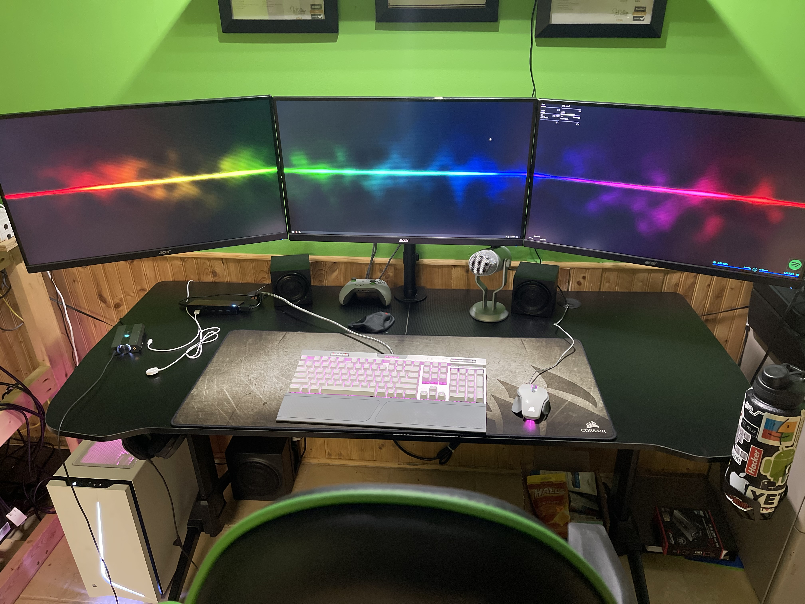

Windows Clients
As a young child, I've always had a fascination with anything electrical. I remember my father having an old IBM desktop computer that cost him somewhere in the $2,000 range.
I would always ask him to play educational games on it. After completing the games a handful of times, I would get bored of them, so I would read his books on DOS and mess around
with the command prompts.
Years of at-home experience and tinkering, I finally landed a job working for a managed service provider called Leading IT. The job is almost everything I've been doing since I was
a child, but now I get paid to have fun.
My duties are primarily setting up new devices for users, which includes installing the operating systems, programs and software, setting up the user's profile on the local
domain, and also installing any additional hardware the client purchased with the machines. As always with the technology world, there is always room to expand and learn.